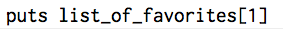

Hashes and Arrays
1/26/2016
Arrays
You can think of an array as a list of data points. Let's look at the array below:
This array is a list of my favorite things in order of favoriteness! All of the items in this array are strings but we could have an array of numbers or we could have an array with strings and numbers. The important thing to note is that this array is defined list of data in a particular order.
In order to access the a piece of data in the array, we can simply "call it." The first piece of data is in the 0th position, the second piece is in the 1st position and so on. In the array of my favorite things, we have four pieces of data and they are listed in order of my preference. Let's assume we want the console to display my second favorite thing. We can very easily access that piece of data by simply entering the following:
Hashes
A hash is a list of pairs of data points. Let's look at the hash below:
In this hash, we see a list of pairs. The first item in the pair is called a key. Each key in a hash is unique - I can only have one favorite animal! We use the key to access the data later on. (Remember how we used a number position to get data from an array?) The pairs in the hash are not in a specific order which is why we acess the value via the key as opposed to the position. This is useful because I'm able to list my favorite things in relation to category instead of listing my favorite things in order of favoriteness. Here's how we can use a key to display my favorite drink in the console: